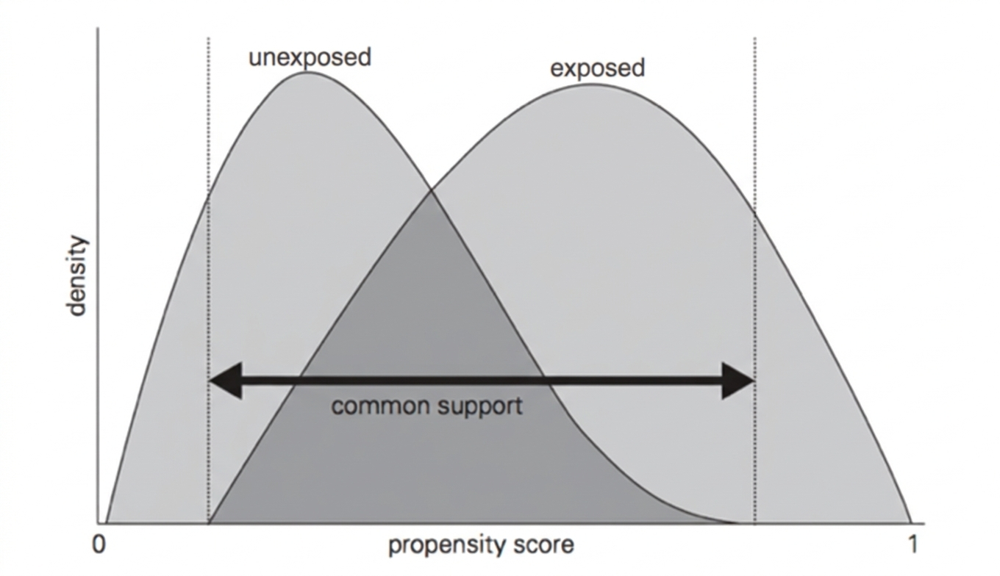
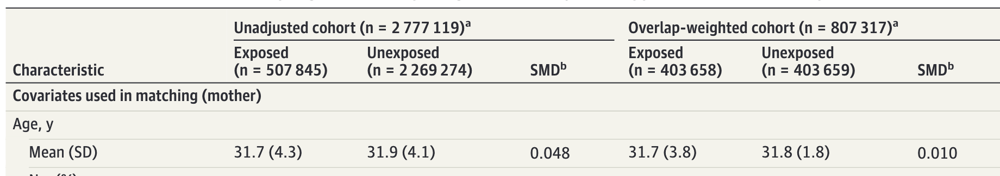
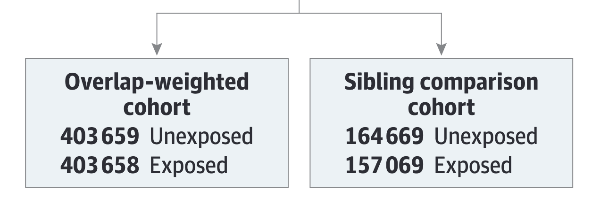
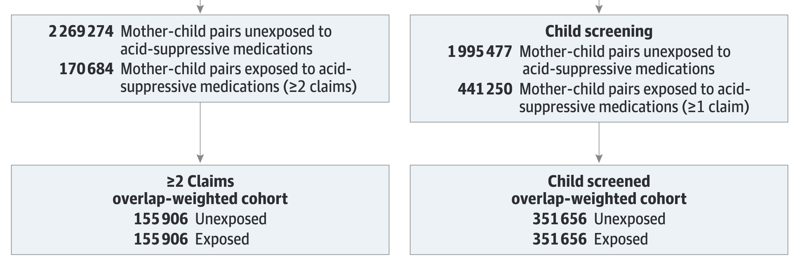

Journal Review 01
Prenatal Exposure to Acid-Suppressive Medications and Risk of Neuropsychiatric Disorders in Children.
2026-03-05
Summary
산모의 위산억제제 복용이 자녀의 신경정신질환 발생위험과 연관이 있는가?
- Population: 2010.01-2017.12 에 출생한 모자 코호트 (NHIS)
- Intervention: 임신 중 위산억제제 처방
- 프로톤 펌프 억제제(PPI),
- H2 수용체 길항제(H2 receptor antagonists)
- Comparison: 임신 중 위산억제제 처방받지 않음
- Outcome: 자녀 신경정신질환 발생
- 중증 신경정신과적 장애(조현병 등),
- 강박장애(obsessive-compulsive),
- ADHD, 자폐(autism), 지적장애 등
Introduction
- 그간 여러 연구에서 산모의 위산억제제1 복용에 대한 유해성 제기
- 조산, 알러지성 질환, 천식, 선천성 기형, 뇌전증(간질) 등
- 태아의 신경계 발달에 대한 유해성도 주목받음
- 태아의 장내 미생물군은 뇌 신경망 형성에 주요한 역할 수행
- 산모의 위산억제제 복용은 태아의 신경발달 프로세스에 영향을 미칠 수 있음
- 특히, 조산아의 2세 전 위산억제제 복용이 신경발달장애 위험증가와 관련이 있을 수 있다는 연구
➡️ 동일한 매커니즘이 태아에게도 작동할 수 있음에 우려 대두
- 산모가 복용하는 PPIs, H2 receptor antagonists는 태반장벽 통과 가능
위산억제제는 임신 중 속쓰림과 위식도역류 증상에 대해 매우 흔히 처방됨
➡️ 그러나 신경정신질환 발생위험과의 관계는 알려져 있지 않음
기존 연구는 조산, 알레르기, 천식 등과의 연관성은 제시했지만 신경정신질환에 대한 근거는 제한적이었음.
연구목적
이에 전국단위 인구를 포괄하는 대규모 코호트 자료를 활용하여, 산모의 위산억제제와 자녀의 신경정신질환 발생위험 사이의 연관성을 밝힘
Methods
Data Source
- 데이터 국민건강보험공단 전국규모(가입률 97%)의 모-자 연계 코호트
(2009.01.01-2023.12.31)
- 활용자료
- Demographics: 성별, 나이, 지역, 보험유형, 소득수준,
- Clinical: 진단코드(ICD-10), 진단일, 진료과 등
- Medical procedures: 수술 및 비약물적 시술기록
- Prescription records: 약물코드 & 투여방법(경로: 경구, 주사 등)
- Health care utilization: 입원 or 외래
- Infant screening: 출생 체중, 조산여부 등
Study Population
(연구대상) 2010.01.01-2017.12.31 사이에 출산한 13-58세 여성
- 산모는 임신 12개월 전까지 관찰(look-back),
- 자녀는 2023.12.31까지 추적(follow-up)
(제외) 임신 전 30일 내에 위산억제제 복용한 산모1, 자료누락 등
(최종) 2,777,119명의 자녀(어머니 2,075,648명) 모-자 연계데이터
- (위산억제제 1회이상 노출군) 507,845명
- (2회이상 노출군) 170,684명 (민감도 분석 1)
- (1회이상 노출군 & 기저질환 자녀제외) 441,250명 (민감도 분석 2)
Outcome
ICD-10 코드를 활용하여, 출생 후 첫 진단을 onset으로 설정
| 심각한 신경정신 질환(조현병 등) |
F20-24, F28-29, F25, F30-31, F32.3, F33.3 |
| 강박성 장애 |
F42 |
| ADHD |
F90 |
| ASD (자폐) |
F84.0, F84.1, F84.5, F84.8, F84.9 |
| 지적 장애 |
F70-F79 |
Covariates
추정식에 포함하여 Crude vs. Adjusted 분석결과 비교
| 산모 인구사회학적 특징 |
출산시 연령, 거주지, 소득 사분위수, 다자녀 여부 |
| 산모 임상적 특징 |
정신질환, 산전 질환 및 의료이용 |
| 출산 요인 |
분만 방법, 출산시 계절 |
| 자녀 요인 |
성별, 조산여부, 저체중 여부 |
Statistical Analysis
Propensity-score-based overlap-weighted
산모의 위산억제제 복용은 무작위로 배정되지 않았음
➡️ 단순비교가 어려움 (confounding)
통상적으로 모델에 covariate 포함시켜서 보정(Crude vs. Adjusted)
➡️ covariate과 outcome 간에 선형성 가정 필요 and 차원의 저주
covariate를 활용하여 노출될 확률(PS)을 계산하고, 이 노출될 확률이 비슷한 개체끼리 매칭하여 분석 (Propensity Score Matching)
➡️ 차원의 저주 문제 완화 & 선형성 가정 회피, but
➡️ PS가 매우 높은 비노출군 혹은 PS가 매우 낮은 노출군은 드물음
➡️➡️ 이 드물은 케이스들이 모델에 영향을 주어 추정이 불안정해짐
더 많은 케이스들이 모델추정에 더 많이 반영되도록 코호트 구성 필요
- 노출군은 보통 PS가 높음 ➡️ PS가 아주 낮은 노출군은 드물음
- 비노출군은 보통 PS가 낮음 ➡️ PS가 아주 높은 비노출군은 드물음
- 공통된 부분에 더 많은 가중치를 주어 코호트 구성 필요
- common support, i.e., overlap

- PS가 극단값이라면 ➡️ 가중치가 0에 가까워지도록,
- PS가 0.5 ➡️ 가중치가 가장 커지도록 구성
\[
w_i=
\begin{cases}
노출군:1-PS\\
비노출군:PS
\end{cases}
\]
일반 코호트(unadjusted)와 가중된 코호트(overlap-weighted)에서 모두 분석하여 비교제시

Cox propotional hazard regression
- 출생 후 추적 중 사건 발생 시점이 각각 다르고 우측절단(censoring)1이 존재하는 데이터
➡️ Cox의 비례위험모델 활용
- 발생여부 & 진단까지 걸린 시간(time-to-event) 활용할 수 있고,
- 공변량을 활용하여 confounder 완화할 수 있음
Cox propotional hazard regression
- 모든 개인에게 공통적으로 적용되는 기본 발생위험 \(h_0(t)\)을 가정하여,
- 노출여부에 따라 각 개인의 발생위험 \(h_i(t)\)이 증가하는 정도를,
- 상대적인 형태로 표현 가능
➡️ 노출군과 비노출군의 평균적인 위험비(HR: Hazard Ratio)를 계산
\[
\log\left(\frac{h_i(t)}{h_0(t)}\right)=\beta Z_i+\gamma^\top X_i
\]
Main Analysis
(1) overlap-weighted 코호트에 Cox 비례위험모델을 적용하여,
위산억제제 노출군과 비노출군 간의 신경정신질환 위험비(HR)를 추정
(2) 1에 더하여, 형재자매 간 비교 (Sibling-Matched Analyses)
Stratified Cox 모델 적용
- 같은 어머니에게서 태어난 형제자매 중 노출여부가 다른 경우를 대상으로 분석
- 가족 내 비관측 교란요인 통제 가능(유전적 요인, 양육환경 등)

Sensitivity Analysis
Main Analyses와 비교하여 Main의 강건성을 확인

Main Results (Overlap-Weighted Model)
| 전체 신경정신질환 |
* |
1.13 (1.11-1.15) |
| 주의력결핍과잉행동장애(ADHD) |
4.85% vs 4.25% |
1.14 (1.12-1.17) |
| 자폐스펙트럼장애(ASD) |
1.45% vs 1.33% |
1.07 (1.03-1.11) |
| 지적장애 |
1.25% vs 1.09% |
1.13 (1.09-1.18) |
| 중증 신경정신질환 |
0.94% vs 0.81% |
1.16 (1.10-1.21) |
| 강박장애 |
0.30% vs 0.27% |
1.12 (1.03-1.21) |
Main Results (Sibling-Matched Model)
- 전체 신경정신질환: HR 1.00 (95% CI, 0.97-1.03)
- ADHD: HR 0.98 (95% CI, 0.95-1.02)
- ASD: HR 0.98 (95% CI, 0.92-1.04)
- 지적장애: HR 1.02 (95% CI, 0.95-1.09)
- 중증 신경정신질환: HR 1.00 (95% CI, 0.93-1.08)
- 강박장애: HR 0.95 (95% CI, 0.82-1.10)
- 핵심: 가족 내 비교에서는 유의한 위험 증가가 관찰되지 않음.
Subgroup and Sensitivity
- 약제군 분석: H2RA 단독 HR 1.12, PPI 단독 HR 1.20(전체 신경정신질환 기준, 약제군 간 유의 차이 없음)
- 시기 분석: 1분기 노출에서 연관성이 가장 일관되며, 2분기/3분기 노출은 대부분 비유의
- 민감도 분석 1: 노출 정의를 2회 이상 처방으로 강화해도 유사한 방향
- 민감도 분석 2: 아동 검진 코호트에서도 주 분석과 일관된 결과
Interpretation
- 대규모 전체 코호트에서는 작은 연관성이 관찰되지만, 형제자매 비교 분석에서는 소실됨.
- 저자 해석: 공유된 가족 요인에 의한 잔여 교란 가능성이 큼.
- 임상적으로는 “강한 인과적 위해 신호”보다는 “관찰연구 기반의 약한 연관”으로 해석하는 것이 타당.
Strengths
- 전국 단위 실제진료자료 기반의 매우 큰 표본(270만명 이상)
- 장기 추적(평균 10.3년)
- Overlap weighting으로 공변량 균형 확보(SMD < 0.1)
- 형제자매 비교 설계로 비측정 가족 단위 교란을 추가 통제
Limitations
- 처방 기록 기반 노출 정의로 실제 복약 순응도 확인 불가
- BMI, 생활습관 등 잔여 교란 가능성
- 유전정보 미포함
- OTC 사용 누락 가능성(다만 한국은 고용량 제제 처방 의존도가 높음)
- 생존 출생 코호트이므로 임신 소실/사산 관련 위험은 평가 불가
Take-Home Message
- 임신 중 PPI/H2RA 노출은 형제자매 비교 분석 기준에서 자녀 신경정신질환 위험 증가와 연관되지 않음.
- 진료 현장에서는 적응증이 명확한 경우 위산분비억제제 사용을 과도하게 회피할 근거는 제한적.
- 다만 개별 환자에서는 최소 유효 용량, 노출 시기, 동반 위험요인을 함께 고려한 처방이 필요.